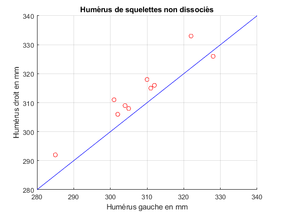

Analyse d'humérus de squelettes
Contents
Étape 1 – lecture
clear; close all; clc; H = load('Humerus.txt'); G = H(:,1); D = H(:,2);
Étape 2 – graphique de données
figure(1);hold on;grid on;axis([280,340,280,340]); plot(G,D,'or'); xlabel('Humérus gauche en mm'); ylabel('Humérus droit en mm'); title('Humérus de squelettes non dissociés') plot([280,340],[280,340],'-b');

Étape 3– quotient D divisé par G
X = D./G;
fprintf('%7.5f,%8.5f,%8.5f,%8.5f,%8.5f\n',X);
1.01286, 1.01325, 1.03322, 1.03416, 1.01282 1.02456, 1.00984, 1.02581, 0.99390, 1.01645
Étape 4 – moyenne et écart-type
fprintf('Moyenne de l''échantillon : %.5f\n',... mean(X)); fprintf(['Écart-type de l''échantillon : ',... '%.5f\n'],std(X));
Moyenne de l'échantillon : 1.01769 Écart-type de l'échantillon : 0.01212
Étape 5 – moyenne et écart-type (reprise)
somme = 0; N = length(X); for i = 1:N somme = somme + X(i); end mXe = somme/N somme2 = 0; for i = 1:N somme2 = somme2 + (X(i)-mXe)^2; end Se = sqrt((1/(N-1))*somme2)
mXe =
1.0177
Se =
0.0121
Hypothèse d'une symétrie bilatérale
Sp = Se/sqrt(N) tmXe = (mXe -1)/Sp
Sp =
0.0038
tmXe =
4.6156

Commentaire de P. Jolicoeur
Comme le laisse entrevoir la figure, il se peut que cette légère prédominance de la longueur de l'humérus droit sur celle de l'humérus gauche soit reliée au fait que la majorité des individus sont aussi droitiers dans les populations actuelles. Il en était probablement de même dans les populations préhistoriques.
Référence : Pierre Jolicoeur, Introduction à la biométrie, 4e édition, Décarie, p.52., QH323.5.J6536, 1998.